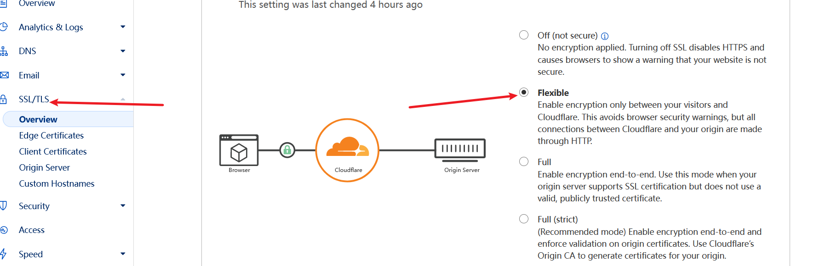
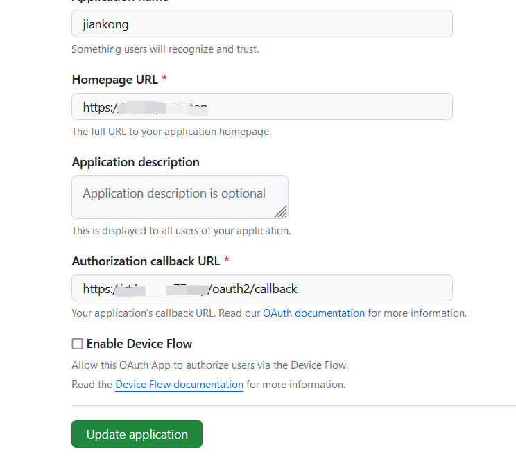

通过cloudflare直接访问哪吒探针
准备一台vps
这一步并不过多说明，这是最基础的，如果不懂怎么购买vps，请google，购买合适自己的VPS。
用ssh工具登录并更新系统环境
更新vps系统环境：
apt update -y && apt install -y curl socat wget sudo
安装Docker：
curl -fsSL https://get.docker.com | sh
准备二个子域名并进行相关配置
域名托管到cf上，添加两个子域名解析，前端域名开启小云朵。如下图：
左侧Rules-Origin Rules，然后填写如下图信息：

完成后直接部署。
左侧SSL设置为“灵活”。

GitHub上 创建一个 OAuth Apps
1.获取链接：https://github.com/settings/developers
2.添加一个New OAuth App
Application name：名称自定义
Homepage URL：前端地址
Authorization callback URL：前端地址+/oauth2/callback
如下图：

ps：一定要https！！！
一键安装哪吒监控面板
curl -L https://raw.githubusercontent.com/naiba/nezha/master/script/install.sh -o nezha.sh && chmod +x nezha.sh && sudo ./nezha.sh
至此就能直接用域名访问哪吒面板，省去反代这个步骤！
最后修改于 2024-06-29